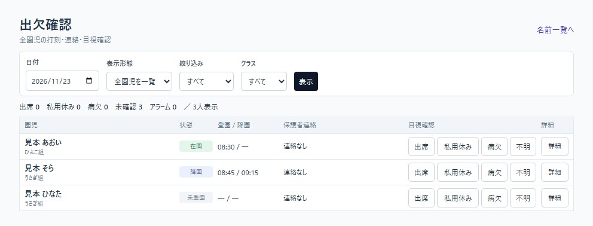
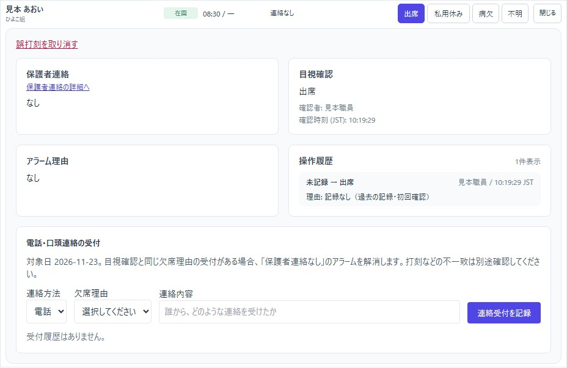
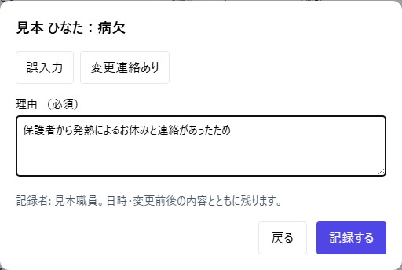
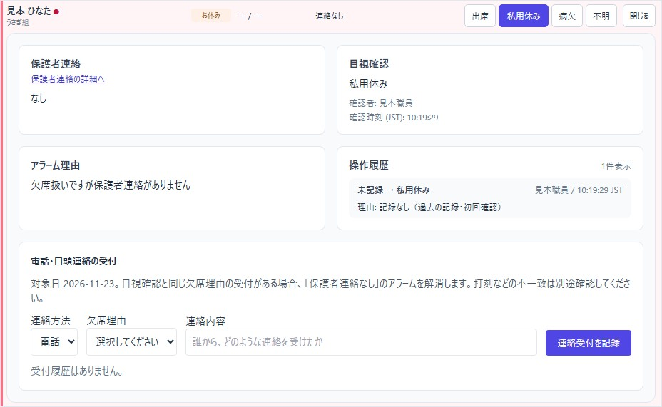
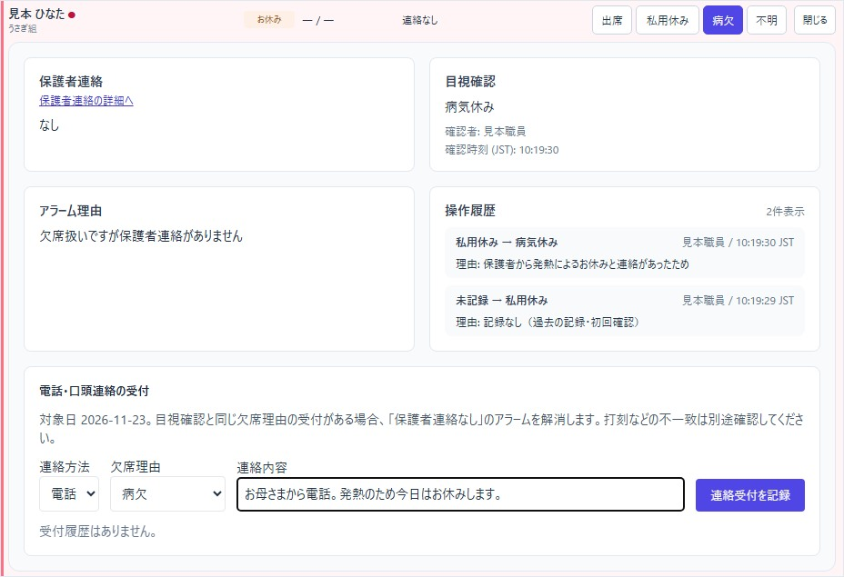
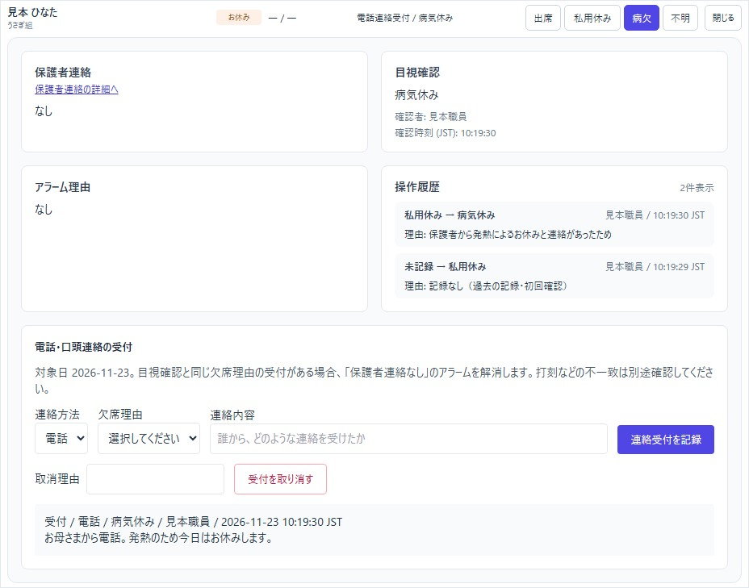
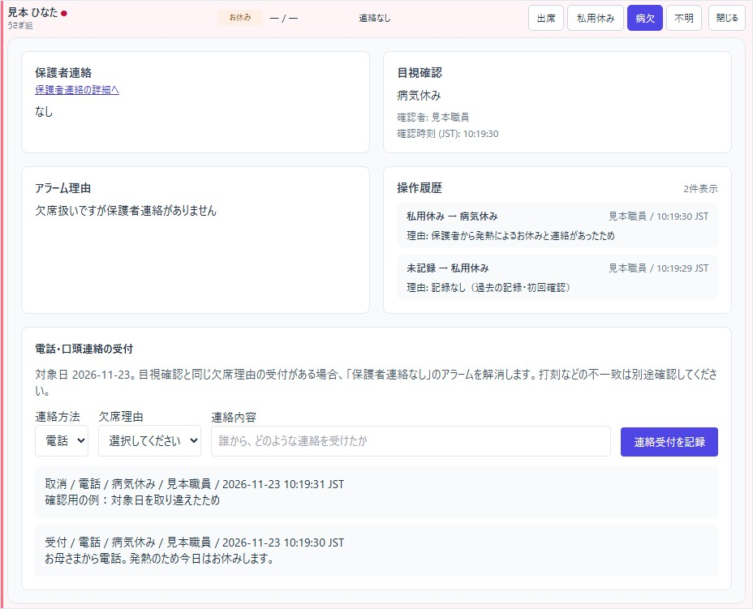

職員向け｜出欠の編集ができる方
朝の出欠を確認する・電話連絡を記録する
打刻・保護者からの連絡・職員の確認結果を見比べます。電話で受けた欠席連絡と、職員が確認した出欠は、それぞれ記録します。
開く順番
職員メニュー → 出欠確認
1日付とクラスを確かめる
「出欠確認」を開き、「日付」と「クラス」を選んで「表示」を押します。「表示形態」は全園児／クラス別、「絞り込み」は未確認・アラームありなどから選べます。
園児名、登園／降園の時刻、保護者連絡を見ます。打刻の「在園」と、職員が記録する「出席」は別の情報です。

2実際の出欠を確かめて記録する
園児本人の様子や職員の記録を確認し、その園児の「出席」「私用休み」「病欠」「不明」を選びます。
初回はボタンを押した時点で保存されます。名前を取り違えないよう、押す前に確認します。「詳細」で確認者・確認時刻・操作履歴を見ます。

3確認済みの出欠を変更する
別の出欠へ変更すると理由の画面が開きます。園児名と変更先を見直し、理由を入れて「記録する」を押します。「戻る」は変更を保存しません。
見本は「私用休み」から「病欠」への変更です。「不明」へ変更するときには保護者への確認通知を選ぶ欄もあります。園の運用に沿って必要な場合に選びます。

4アラームの理由を確認する
色の付いた行やアラーム表示があるときは、その園児の「詳細」を開きます。「保護者連絡」「目視確認」「アラーム理由」を見比べます。
「連絡なし」と分かっていても、欠席や打刻を推測で変更しません。見本は職員が「私用休み」と記録した一方、保護者連絡の記録がない例です。

5電話・口頭で受けた欠席連絡を保存する
同じ詳細画面の「電話・口頭連絡の受付」で「連絡方法」「欠席理由」「連絡内容」を入力します。誰から、どのような連絡を受けたかを残し、「連絡受付を記録」を押します。
保存後に詳細を開き、受付内容・職員・日時を確認します。同じ日・同じ欠席理由なら「保護者連絡なし」のアラームは解消します。打刻や目視確認は変わらず、ほかの不一致は残ります。




6電話受付を間違えたときは理由を付けて取り消す
誤って受け付けた記録の「取消理由」に、日付や園児の取り違えなどの理由を入力し、「受付を取り消す」を押します。
取消も履歴に残り、アラームが再判定されます。これは電話・口頭の受付記録の取消です。登園・降園の時刻を直す場合は、打刻の補記・修正・取消へ進みます。



読み終えたら確認すること
このチェックは読み進めるための目印です。業務記録は送信されません。